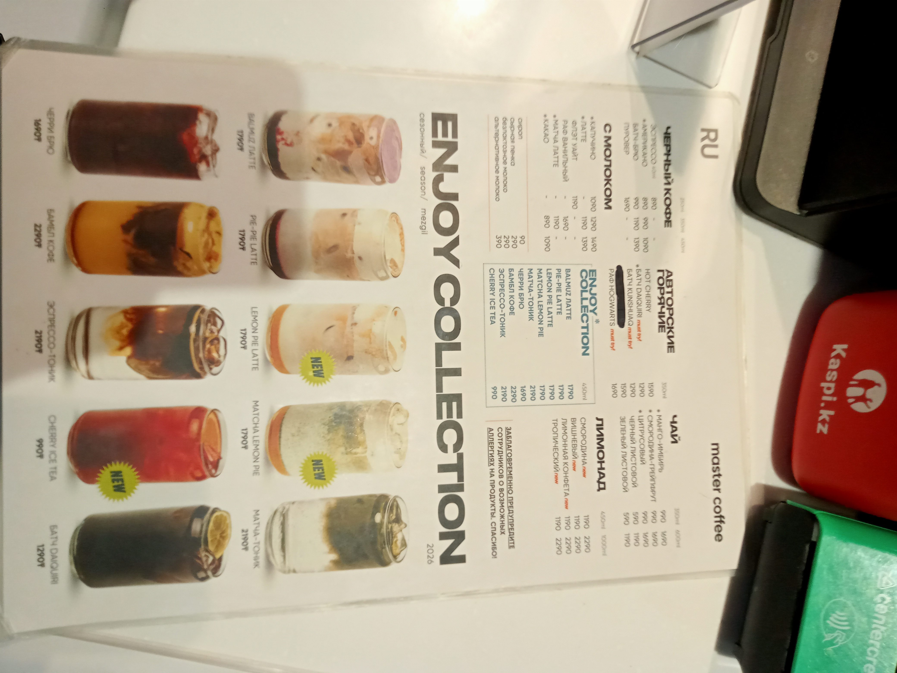
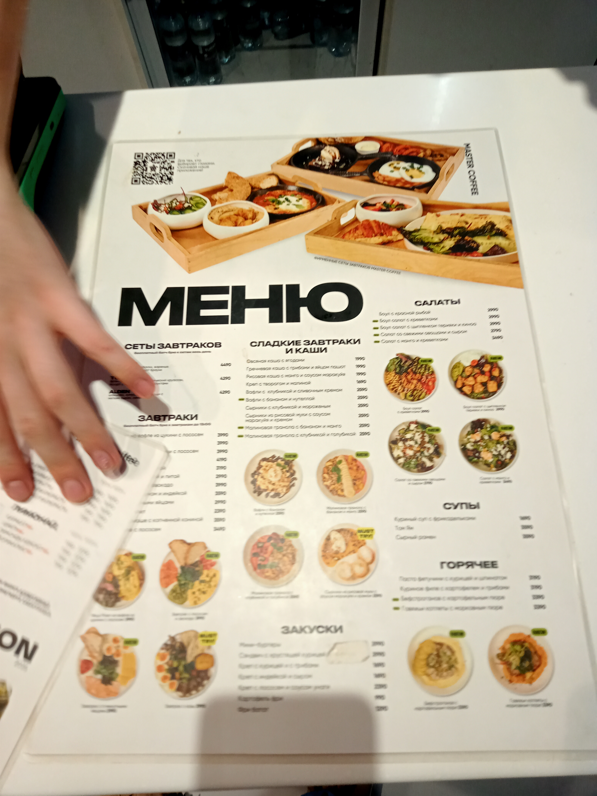
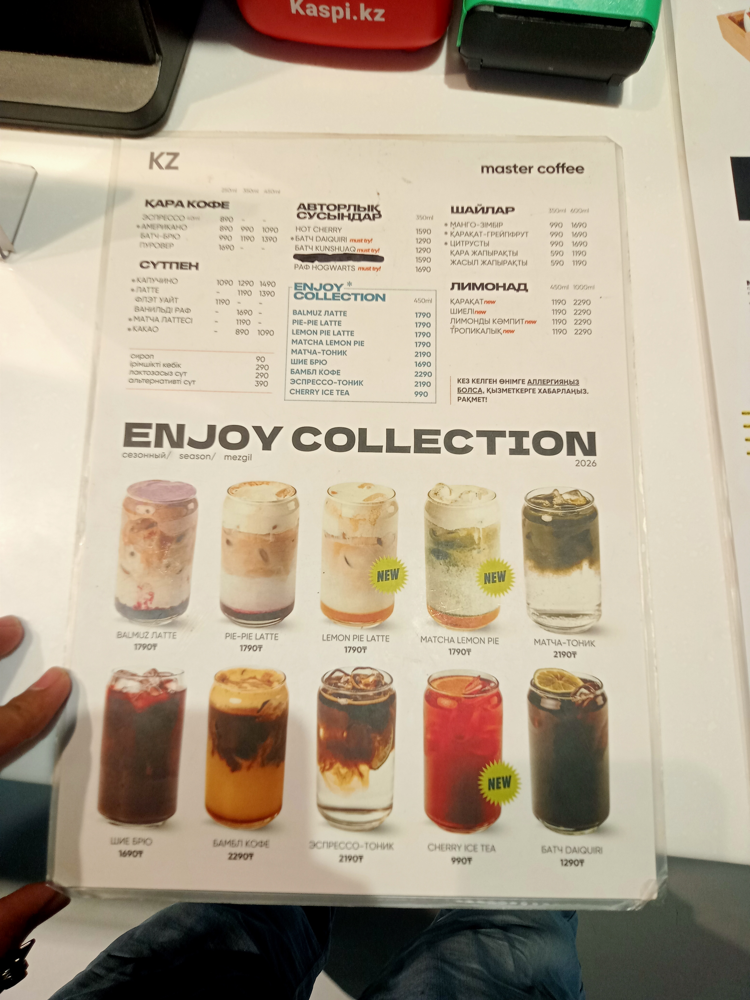

Our Visual Menu
Please browse our current offerings through the images below:



Detailed Pricing & Information
For accessibility, we provide our core pricing below. Some of our coffees have a caffeine content of approx. 95mg per 100ml1, while decaf is roughly 2mgavg.
| Beverage | Size | Price |
|---|---|---|
| Espresso | Single | ₸1,200 |
| Flat White | Regular | ₸1,800 |
| Cold Brew | Large | ₸2,200 |
| V60 Pour Over | Standard | ₸2,000 |
Brewing Guides
Recommended Ratios
- Prepare your filter.
- Rinse with hot water.
- Discard rinse water.
- Add 15g of ground coffee.
- Pour 250ml of water (94°C).
Coffee Terms
- Cupping
- The professional process of observing the tastes and aromas of brewed coffee.
- Terroir
- The environmental factors that affect a crop's phenotype.
- Bloom
- The rapid release of CO2 when hot water first hits fresh grounds.